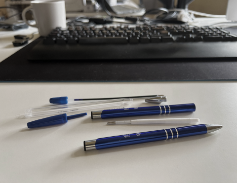

Foto: Reinis Odītis, Izjauktās pildspalvas
Pirmie soļi
Ceļa sākums uz studijām Latvijas Universitātes Datorikas fakultātē teorētiski iesākās jau pašā
bērnībā.
Mazs būdams biju ļoti rosīgs bērns. Izzināju apkārtējo pasauli, izmantojot nevis acis, bet
gan rokas. Visu vajadzēja aizskart, izjaukt, pārbaudīt. Ja uz darba galda atradās pildspalvas, tās tika
sadalītas līdz sīkākajām detaļām. Kas rezultējās pie tā, ka visus rakstāmrīkus lēnām no turienes
aizvāca.
Lai atslogotu mājas tehniku un apārkt esošās lietas, vecāki ieguldījās konstruktoros, kas
kļuva par ikdienišķu nodarbi. Nodarbe, kas ļāva spert pirmos soļus tehniskās datorikas virzienā.